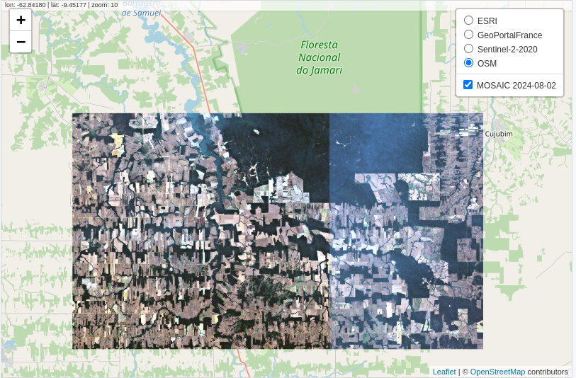
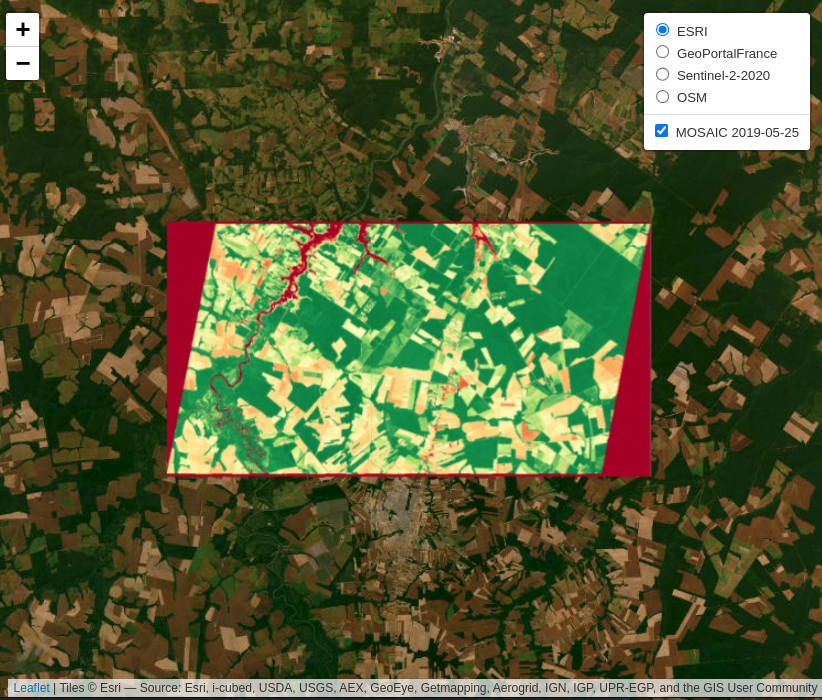
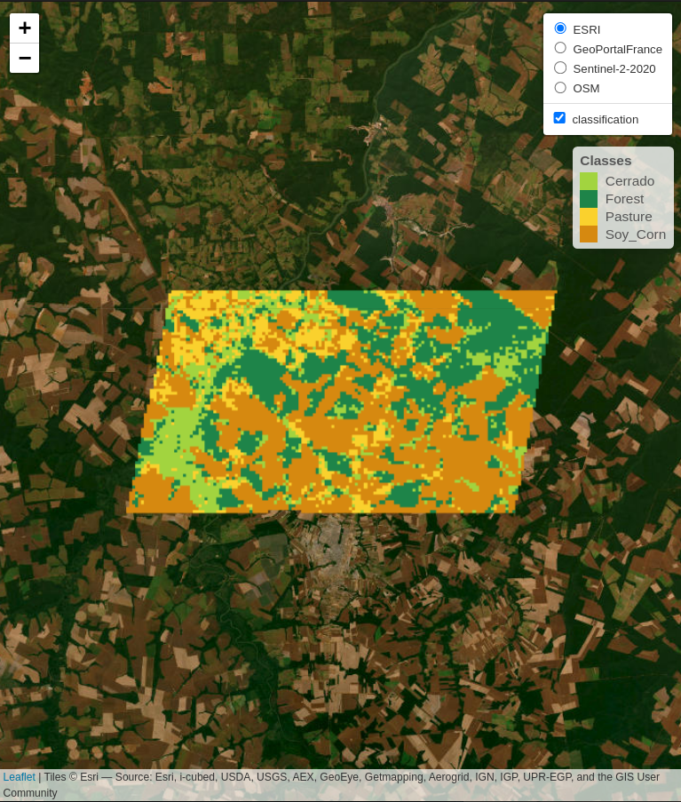

roi <- c("lon_min" = -63.410, "lat_min" = -9.783,
"lon_max" = -62.614, "lat_max" = -9.331)28 SITS and GEE: side-by-side comparison
28.1 Introduction
This section presents a side-by-side exploration of the sits and Google Earth Engine (gee) APIs, focusing on their respective capabilities in handling satellite data. The exploration is structured around three key examples: (1) creating a mosaic, (2) calculating the Normalized Difference Vegetation Index (NDVI), and (3) performing a Land Use and Land Cover (LULC) classification. Each example demonstrates how these tasks are executed using sits and gee, offering a clear view of their methodologies and highlighting the similarities and the unique approaches each API employs.
28.2 Creating a Mosaic
A common application among scientists and developers in the field of Remote Sensing is the creation of satellite image mosaics. These mosaics are formed by combining two or more images, typically used for visualization in various applications. In this example, we will demonstrate how to create an image mosaic using sits and gee APIs.
In this example, a Region of Interest (ROI) is defined using a bounding box with longitude and latitude coordinates. Below are the code snippets for specifying this ROI in both sits and gee environments.
roi = ee.Geometry.Rectangle([-63.410,-9.783,-62.614,-9.331]);Next, we will load the satellite imagery. For this example, we used data from Sentinel-2. In sits, several providers offer Sentinel-2 ARD images. In this example, we will use images provided by the Microsoft Planetary Computer (MPC).
data = ee.ImageCollection('COPERNICUS/S2_SR_HARMONIZED')
.filterDate('2024-08-01', '2024-08-03')
.filter(ee.Filter.inList('MGRS_TILE', ['20LNQ', '20LMQ']))
.select(['B4', 'B3', 'B2']);sits provides search filters for a collection as parameters in the sits_cube() function, whereas gee offers these filters as methods of an ImageCollection object.
In sits, we will use the sits_mosaic() function to create mosaics of our images. In gee, we will take the mosaic() method. In sits, sits_mosaic() crops the mosaic based on the roi parameter. In gee, cropping is performed using the clip() method. We will use the same roi that was used to filter the images to perform the cropping on the mosaic. See the following code:
mosaic <- sits_mosaic(
cube = data,
roi = roi,
multicores = 4,
output_dir = tempdir()
)mosaic = data.mosaic().clip(roi);Finally, the results can be visualized in an interactive map.
sits
# Visualization in SITS
sits_view(
x = mosaic,
red = "B04",
green = "B03",
blue = "B02"
)
gee
# Visualization in GEE
# Define view region
#
Map.centerObject(roi, 10);
# Add mosaic Image
Map.addLayer(mosaic, {
min: 0,
max: 3000
}, 'Mosaic');28.3 Calculating NDVI
This example demonstrates how to generate time-series of Normalized Difference Vegetation Index (NDVI) using both the sits and gee APIs. In this example, a Region of Interest (ROI) is defined using the sinop_roi.shp file. Below are the code snippets for specifying this file in both sits and gee environments.
To reproduce the example, you can download the shapefile using this link. In sits, you can just use it. In gee, it would be required to upload the file in your user space.
roi_data <- "sinop_roi.shp"roi_data = ee.FeatureCollection("/path/to/sinop_roi");Next, we load the satellite imagery. For this example, we use data from Landsat-8. In sits, this data is retrieved from the Brazil Data Cube, although other sources are available. For gee, the data provided by the platform is used. In sits, when the data is loaded, all necessary transformations to make the data ready for use (e.g., factor, offset, cloud masking) are applied automatically. In gee, users are responsible for performing these transformations themselves.
data <- sits_cube(
source = "BDC",
collection = "LANDSAT-OLI-16D",
bands = c("RED", "NIR08", "CLOUD"),
roi = roi_data,
start_date = "2019-05-01",
end_date = "2019-07-01"
)data = ee.ImageCollection("LANDSAT/LC08/C02/T1_L2")
.filterBounds(roi_data)
.filterDate("2019-05-01", "2019-07-01")
.select(["SR_B4", "SR_B5", "QA_PIXEL"]);
# factor and offset
data = data.map(function(image) {
opticalBands = image.select('SR_B.').multiply(0.0000275).add(-0.2);
return image.addBands(opticalBands, null, true);
});
data = data.map(function(image) {
# Select the pixel_qa band
qa = image.select('QA_PIXEL');
// Create a mask to identify cloud and cloud shadow
cloudMask = qa.bitwiseAnd(1 << 5).eq(0) # Clouds
.and(qa.bitwiseAnd(1 << 3).eq(0)); # Cloud shadows
# Apply the cloud mask to the image
return image.updateMask(cloudMask);
});After loading the satellite imagery, the NDVI can be generated. In sits, a function allows users to specify the formula used to create a new attribute, in this case, NDVI. In gee, a callback function is used, where the NDVI is calculated for each image.
data_ndvi <- sits_apply(
data = data,
NDVI = (NIR08 - RED) / (NIR08 + RED),
output_dir = tempdir(),
multicores = 4,
progress = TRUE
)var data_ndvi = data.map(function(image) {
var ndvi = image.normalizedDifference(["SR_B5", "SR_B4"]).rename('NDVI');
return image.addBands(ndvi);
});
data_ndvi = data_ndvi.select("NDVI");The results are clipped to the ROI defined at the beginning of the example to facilitate visualization. In both APIs, you can define a ROI before performing the operation to optimize resource usage. However, in this example, the data is cropped after the calculation.
data_ndvi <- sits_mosaic(
cube = data_ndvi,
roi = roi_data,
output_dir = tempdir(),
multicores = 4
)data_ndvi = data_ndvi.map(function(image) {
return image.clip(roi_data);
});Finally, the results can be visualized in an interactive map.
sits
sits_view(data_ndvi, band = "NDVI", date = "2019-05-25", opacity = 1)
gee
# Define view region
Map.centerObject(roi_data, 10);
# Add classification map (colors from sits)
Map.addLayer(data_ndvi, {
min: 0,
max: 1,
palette: ["red", 'white', 'green']
}, "NDVI Image");
Land Use and Land Cover (LULC) Classification
This example demonstrates how to perform Land Use and Land Cover (LULC) classification using satellite image time series and machine-learning models in both sits and gee.
This example defines the region of interest (ROI) using a shapefile named sinop_roi.shp. Below are the code snippets for specifying this file in both sits and gee environments. To reproduce the example, you can download the shapefile using this link. In sits, you can just use it. In gee, it would be required to upload the file in your user space.
roi_data <- "sinop_roi.shp"roi_data = ee.FeatureCollection("/path/to/sinop_roi");To train a classifier, sample data with labels representing the behavior of each class to be identified is necessary. In this example, we use a small set with 18 samples. The following code snippets show how these samples are defined in each environment.
In sits, labels can be of type string, whereas gee requires labels to be integers. To accommodate this difference, two versions of the same sample set were created: (1) one with string labels for use with sits, and (2) another with integer labels for use with gee.
To download these samples, you can use the following links: samples_sinop_crop for sits or samples_sinop_crop for gee
samples <- "samples_sinop_crop.shp"samples = ee.FeatureCollection("samples_sinop_crop_gee");Next, we load the satellite imagery. For this example, we use data from MOD13Q1 . In sits, this data is retrieved from the Brazil Data Cube, but other sources are also available. In gee, the platform directly provides this data. In sits, all necessary data transformations for classification tasks are handled automatically. In contrast, gee requires users to manually transform the data into the correct format.
In the gee code, transforming all images into bands mimics the approach used by sits for non-temporal classifiers. However, this method is not inherently scalable in gee and may need adjustments for larger datasets or more bands. Additionally, for temporal classifiers like TempCNN, other transformations are necessary and must be manually implemented ingee . In contrast, sits provides a consistent API experience, regardless of the data size or machine learning algorithm.
data <- sits_cube(
source = "BDC",
collection = "MOD13Q1-6.1",
bands = c("NDVI"),
roi = roi_data,
start_date = "2013-09-01",
end_date = "2014-08-29"
)data = ee.ImageCollection("MODIS/061/MOD13Q1")
.filterBounds(roi_data)
.filterDate("2013-09-01", "2014-09-01")
.select(["NDVI"]);
# Transform all images to bands
data = data.toBands();In this example, we’ll use a Random Forest classifier to create a LULC map. To train the classifier, we need sample data linked to time-series. This step shows how to extract and associate time-series with samples.
samples_ts <- sits_get_data(
cube = data,
samples = samples,
multicores = 4
)samples_ts = data.sampleRegions({
collection: samples,
properties: ["label"]
});With the time-series data extracted for each sample, we can now train the random forests classifier.
classifier <- sits_train(
samples_ts, sits_rfor(num_trees = 100)
)var classifier = ee.Classifier.smileRandomForest(100).train({
features: samples_ts,
classProperty: "label",
inputProperties: data.bandNames()
});Now, it is possible to generate the classification map using the trained model. In sits, the classification process starts with a probability map. This map provides the probability of each class for every pixel, offering insights into the classifier’s performance. It also allows for refining the results using methods like Bayesian probability smoothing. After generating the probability map, it is possible to produce the class map, where each pixel is assigned to the class with the highest probability.
In gee, while it is possible to generate probabilities, it is not strictly required to produce the classification map. Yet, as of the date of this document, there is no out-of-the-box solution available for using these probabilities to enhance classification results.
# Get the probabilities maps
probs_map = data.classify(classifier.setOutputMode("MULTIPROBABILITY"));
# Get the classified map
class_map = data.classify(classifier);The results are clipped to the ROI defined at the beginning of the example to facilitate visualization. In both APIs, it’s possible to define an ROI before processing. However, this was not done in this example.
class_map <- sits_mosaic(
cube = class_map,
roi = roi_data,
output_dir = tempdir(),
multicores = 4
)class_map = class_map.clip(roi_data);Finally, the results can be visualized on an interactive map.
sits
sits_view(class_map, opacity = 1)
gee
# Define view region
Map.centerObject(roi_data, 10);
# Add classification map (colors from sits)
Map.addLayer(class_map, {
min: 1,
max: 4,
palette: ["#FAD12D", "#1E8449", "#D68910", "#a2d43f"]
}, "Classification map");
28.4 Summary
This chapter provides an overview of the main differences between the APIs of sits and gee. The sits authors recognize their debt to gee, which was the first application with a coherent API to deal with big EO data. By making a coherent API, gee showed the way forward to big EO application developers. To a large extent, the improvements of sits in relation to gee stem from a careful analysis of Google’s API, which allowed an appraisal of its strengths and drawbacks.